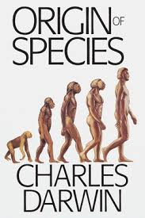

Origin of Species
Science
Biology
Evolution
Description
Darwin's theory of natural selection issued a profound challenge to orthodox thought and belief: no being or species has been specifically created; all are locked into a pitiless struggle for existence, with extinction looming for those not fitted for the task. Yet The Origin of Species (1859) is also a humane and inspirational vision of ecological interrelatedness, revealing the complex mutual interdependencies between animal and plant life, climate and physical environment, and—by implication—within the human world. Written for the general reader, in a style which combines the rigour of science with the subtlety of literature, The Origin of Species remains one of the founding documents of the modern age.
Book Details
Publisher
John Murray
ISBN
978-0451529060
Publication Date
November 24, 1859
File Size
~2-3 MB
Format
PDF, EPUB